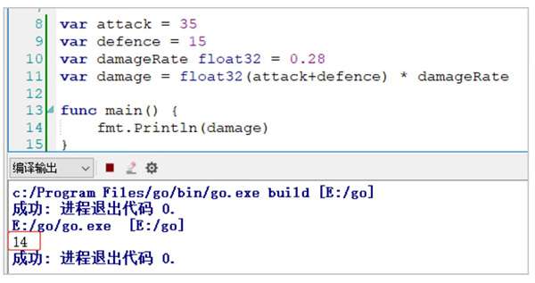
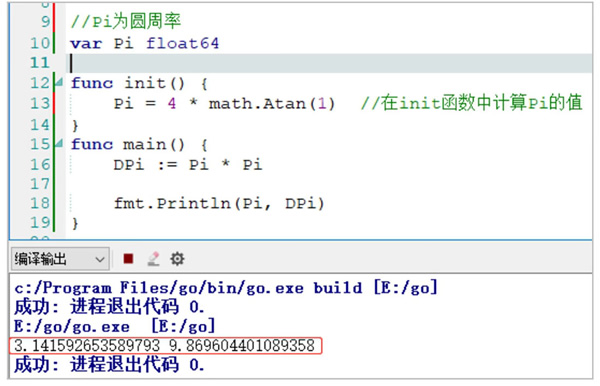

首页 > 编程笔记
Go语言变量的声明和初始化
变量主要用来存储数据信息，变量的值可以通过变量名进行访问。
Go语言的变量名的命名规则与其他语言一样，都是由字母、数字和下画线组成，其中变量名的首字符不能为数字。
同样，可以一次声明多个变量。在声明多个变量时可以写成常量的那种形式，例如：
第3行，表达式的右值中使用了 0.28。
Go语言和C语言一样，这里如果不指定 damageRate 变量的类型，Go语言编译器会将 damageRate 类型推导为 float64，由于这里不需要 float64 的精度，所以需要强制指定类型为 float32。
第4行，将 attack 和 defence 相加后的数值结果依然为整型，使用 float32() 将结果转换为 float32 类型，再与 float32 类型的 damageRate 相乘后，damage 类型也是 float32 类型。
第5行，输出 damage 的值。
运行结果如图1所示。
注意：由于使用了
该写法同样支持多个类型变量同时声明并赋值，例如：
init 函数是一个特殊的函数，它会在包完成初始化后自动执行，执行优先级比 main 函数高，并且不能手动调用 init 函数。每一个源文件有且只有一个 init 函数，初始化过程会根据包的依赖关系按顺序单线程执行。
可以在开始执行程序之前通过 init 函数来对数据进行检验与修复，保证程序执行时状态正常，例如：
例如，使用Go语言进行排序时就需要使用变量的交换，代码如下：
Go语言的变量名的命名规则与其他语言一样，都是由字母、数字和下画线组成，其中变量名的首字符不能为数字。
Go语言变量的声明
Go语言变量的声明通常使用 var 关键字，变量的声明格式如下：var identifier type
其中，var 是声明变量的关键字，identifier 是变量名，type 是变量的类型，行尾无须添加分号，例如：
var a int //声明整型类型的变量,保存整数数值
var b string //声明字符串类型的变量
var c []float32 //声明32位浮点切片类型的变量,浮点切片表示由多个浮点类型组成的数据结构
var d func() bool //声明返回值为布尔类型的函数变量
var e struct { //声明结构体类型的变量,该结构体拥有整型的x字段
x int
}
注意：Go语言和其他编程语言不同之处在于，它在声明变量时将变量的类型放在变量的名称之后。这样做的好处就是可以避免出现含糊不清的声明形式。例如，如果想要两个变量都是指针，不需要将它们分开书写，写成var a, b *int即可。同样，可以一次声明多个变量。在声明多个变量时可以写成常量的那种形式，例如：
var (
a int
b string
c []float32
d func() bool
e struct {
x int
}
)
同一类型的多个变量可以声明在同一行，例如：
var a, b, c int
多个变量可以在同一行进行声明和赋值，例如：var a, b, c int = 1, 2, 3
多个变量可以在同一行进行赋值，但注意只能在函数体内，例如：a, b = 1, 2
如果想要交换两个变量的值，可以使用交换语句，例如：a, b = b, a
Go语言初始化变量
Go语言在声明变量时，自动对变量对应的内存区域进行初始化操作。每个变量会初始化其类型的默认值，例如：- 整型和浮点型变量的默认值为0。
- 字符串变量的默认值为空字符串。
- 布尔型变量的默认值为 false。
- 切片、函数、指针变量的默认值为 nil。
1) 变量初始化的标准格式
变量的初始化标准格式如下：var 变量名 类型 = 表达式
例如：var a int = 2
其中，a 为变量名，类型为 int，a 的初始值为 2。2) 编译器推导类型的格式
2 和 int 同为 int 类型，因此可以进一步简化初始化的写法，也即：var a = 2
等号右边的部分在编译原理里被称为右值（rvalue）。var attack = 35 var defence = 15 var damageRate float32 = 0.28 var damage = float32(attack+defence) * damageRate fmt.Println(damage)第1行和第2行，右值为整型，attack 和 defence 变量的类型为 int。
第3行，表达式的右值中使用了 0.28。
Go语言和C语言一样，这里如果不指定 damageRate 变量的类型，Go语言编译器会将 damageRate 类型推导为 float64，由于这里不需要 float64 的精度，所以需要强制指定类型为 float32。
第4行，将 attack 和 defence 相加后的数值结果依然为整型，使用 float32() 将结果转换为 float32 类型，再与 float32 类型的 damageRate 相乘后，damage 类型也是 float32 类型。
第5行，输出 damage 的值。
运行结果如图1所示。

图1：变量初始化运行结果
图1：变量初始化运行结果
3) 短变量声明并初始化
var 的变量声明还有一种更为精简的写法，即：a := 2
其中，:=只能出现在函数内（包括在方法内），此时Go编译器会自动进行数据类型的推断。注意：由于使用了
:=，而不是赋值的=，因此推导声明写法的左值变量必须是没有定义过的变量。若再次定义，将会出现编译错误。该写法同样支持多个类型变量同时声明并赋值，例如：
a, b := 1, 2
Go语言中，除了可以在全局声明中初始化实体，也可以在 init 函数中初始化。init 函数是一个特殊的函数，它会在包完成初始化后自动执行，执行优先级比 main 函数高，并且不能手动调用 init 函数。每一个源文件有且只有一个 init 函数，初始化过程会根据包的依赖关系按顺序单线程执行。
可以在开始执行程序之前通过 init 函数来对数据进行检验与修复，保证程序执行时状态正常，例如：
package main
import (
"fmt"
"math"
)
//Pi为圆周率
var Pi float64
func init() {
Pi = 4 * math.Atan(1) //在init函数中计算Pi的值
}
func main() {
DPi := Pi * Pi
fmt.Println(Pi, DPi)
}
运行结果如图2所示。

图2：init函数初始化运行结果
图2：init函数初始化运行结果
Go语言多个变量同时赋值
变量的交换是编程最简单的算法之一。在进行交换变量时，通常需要一个中间变量临时对变量进行保存。用传统方法编写变量交换代码如下：var a int = 100 var b int = 200 var t int t = a a = b b = t fmt.Println(a, b)传统方法的变量交换往往占用了较大的内存空间，因此，根据这一情况又发明了一些算法来避免使用中间变量，例如：
var a int = 100 var b int = 200 a = a ^ b b = b ^ a a = a ^ b fmt.Println(a, b)这种算法往往对数值范围和类型都有一定的要求。到了Go语言时，内存不再是紧缺资源，而且写法可以更加简单。使用Go语言的“多重赋值”特性，可以轻松完成变量交换的任务，例如：
var a int = 100 var b int = 200 b, a = a, b fmt.Println(a, b)在对多个变量同时赋值时，变量的左值和右值按从左到右的顺序依次赋值。多重赋值在Go语言的错误处理和函数返回值中会大量地使用。
例如，使用Go语言进行排序时就需要使用变量的交换，代码如下：
type IntSlice []int
func (p IntSlice) Len() int { return len(p) }
func (p IntSlice) Less(i, j int) bool { return p[i] < p[j] }
func (p IntSlice) Swap(i, j int) { p[i], p[j] = p[j], p[i] }
在以上代码中：
- 第1行，将 IntSlice 声明为 []int 类型。
- 第2行，为 IntSlice 类型编写一个 Len 方法，提供切片的长度。
- 第3行，根据提供的 i、j 元素索引，获取元素后进行比较，返回比较结果。
- 第4行，根据提供的 i、j 元素索引，交换两个元素的值。
关注公众号「站长严长生」，在手机上阅读所有教程，随时随地都能学习。内含一款搜索神器，免费下载全网书籍和视频。

微信扫码关注公众号